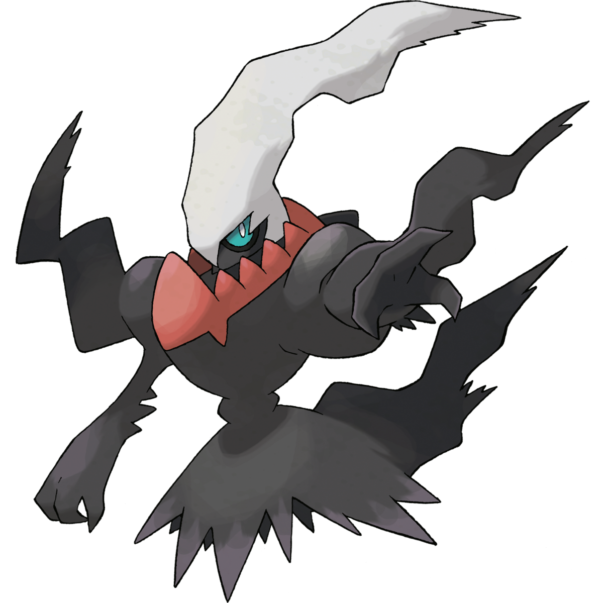
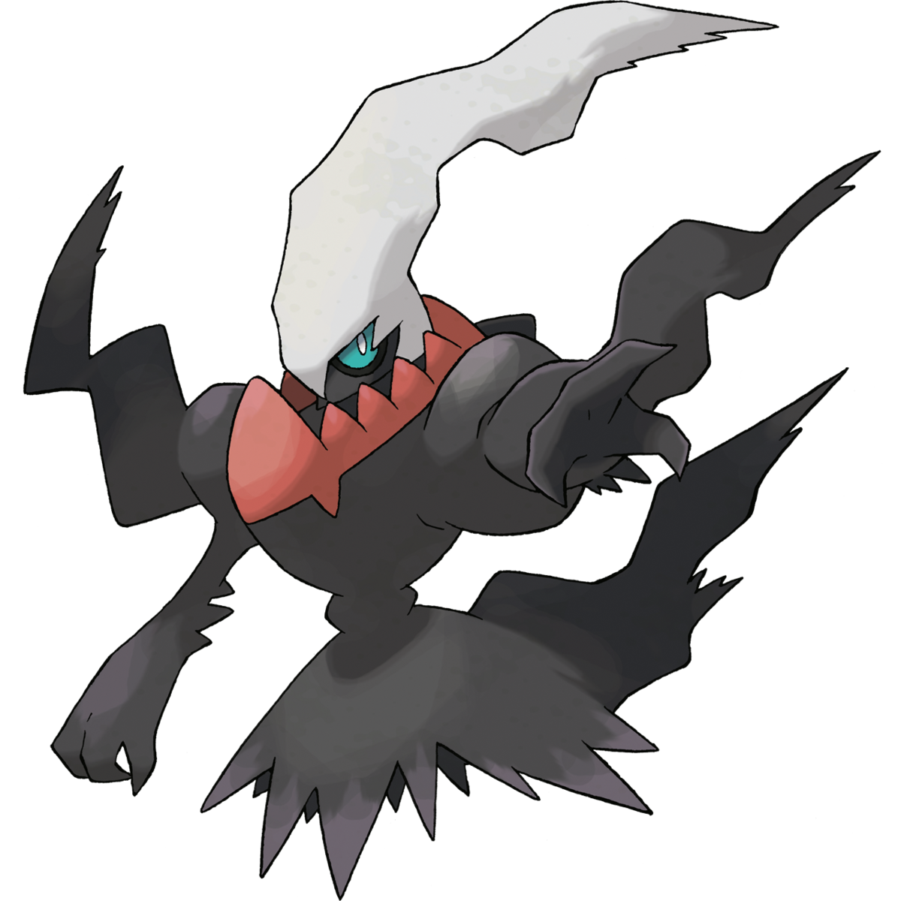
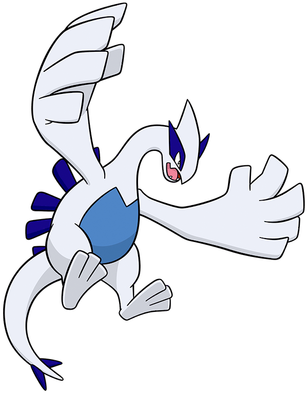
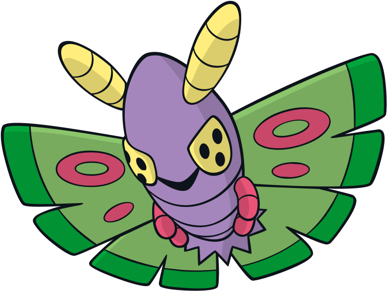

1. Darkrai
Darkrai (ダークライ, Daakurai) is a Dark-type Mythical Pokémon. Cresselia is Darkrai's counterpart and rival, and together they form the Lunar Duo.

Mujtaba Ali
10-September-2022
Darkrai (ダークライ, Daakurai) is a Dark-type Mythical Pokémon. Cresselia is Darkrai's counterpart and rival, and together they form the Lunar Duo.
Lugia (Japanese: ルギア Rugia) is a Psychic/Flying Legendary Pokémon. It is the Version Mascot for Pokémon Silver along with its remake, Pokémon SoulSilver. It also is the Trio Master of the Legendary Birds.
Dustox (ドクケイル, Dokukeiru) is a Bug/Poison-type Pokémon introduced in Generation III and the evolved form of Cascoon. Dustox evolves from Cascoon starting at level 10 and is one of two possible final evolutions of Wurmple.
